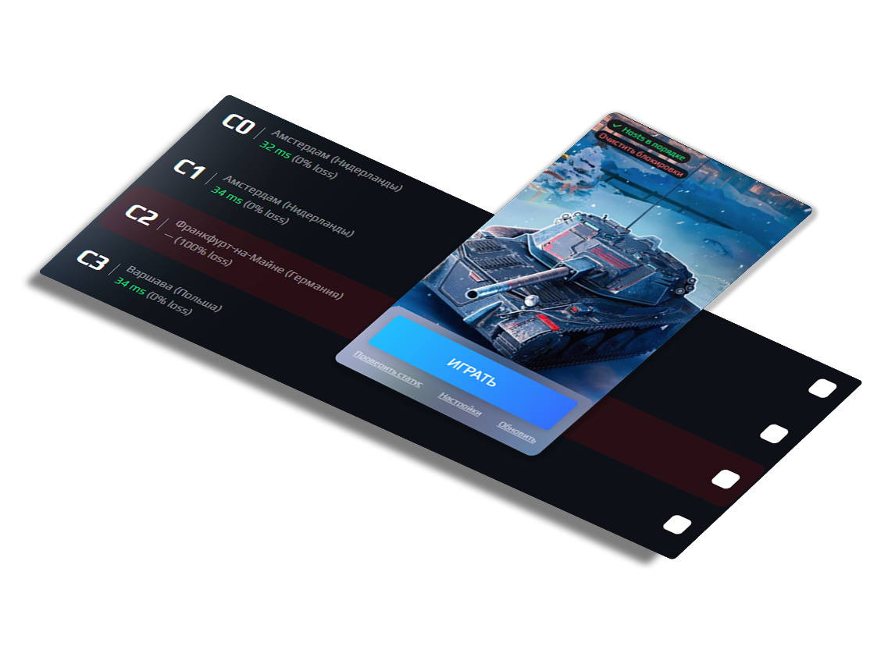

Оптимизируйте соединение, выбирайте лучшие серверы, контролируйте игровой опыт

Все, что нужно для оптимального игрового опыта
Автоматический выбор сервера с наименьшим пингом для максимальной отзывчивости
Блокировка нестабильных серверов через hosts файл и брандмауэр Windows
Поддержка EU, RU, NA и ASIA регионов с детальной статистикой пинга
Автоматическое создание backup перед внесением изменений в hosts
Реальная статистика задержек для каждого сервера с историей измерений
Быстрый запуск WoT Blitz через Steam прямо из приложения
Бесплатно для Windows 10/11 и Android
Приложение не содержит вирусов или вредоносного кода. Исходный код открыт на GitHub.
Для работы функций блокировки требуется запуск от имени Администратора.
Быстрый старт и руководство по использованию
Скачайте установщик из раздела выше и запустите его. Следуйте инструкциям установщика.
clusterbanned__x64-setup.exe
Для работы функций блокировки серверов запустите приложение с правами администратора:
В главном окне выберите регион игры и сервер с наименьшим пингом (зеленый показатель).
Совет: Серверы с пингом менее 50ms отмечены зеленым, 50-100ms - желтым, выше 100ms - красным.
Отметьте серверы, которые хотите заблокировать, и нажмите "Обновить блок". Затем запустите игру через кнопку "Играть".
В настройках приложения вы можете выбрать:
Приложение автоматически пингует все серверы выбранного региона и показывает:
Блокировка работает двумя способами:
0.0.0.0 domain.com
Для снятия блокировок используйте кнопку "Очистить блокировки".
Причина: Приложение запущено без прав администратора.
Решение: Закройте приложение и запустите его от имени администратора.
ПКМ по ярлыку → Запуск от имени администратора
Причина 1: Steam не установлен или не запущен.
Решение 1: Убедитесь, что Steam установлен и запущен.
Причина 2: Изменен App ID игры в Steam.
Решение 2: Запустите игру напрямую через Steam.
Причина: Брандмауэр или антивирус блокируют ICMP запросы.
Решение: Добавьте приложение в исключения брандмауэра/антивируса.
Причина: Файл hosts защищен системой или используется другим приложением.
Решение:
Причина: Отсутствует .NET Framework 4.8 или выше.
Решение: Скачайте и установите .NET Framework с официального сайта Microsoft.
Скачать .NET FrameworkОтветы на популярные вопросы о Cluster Banned Manager
Да, приложение полностью безопасно. Оно только читает и изменяет системный файл hosts, а также управляет правилами брандмауэра Windows. Исходный код открыт и доступен на GitHub для проверки.
Нет, изменения в hosts файле и брандмауэре сохраняются после закрытия приложения. Запускать его нужно только для изменения настроек блокировки или выбора другого сервера.
В текущей версии приложение настроено только для World of Tanks Blitz. Однако, при наличии конфигурационных файлов можно адаптировать его для других игр.
1. Используйте "Очистить блокировки" в приложении
2. Удалите приложение через Панель управления
3. При необходимости удалите резервные копии из папки с hosts
файлом
В настоящее время приложение доступно только для Windows 10/11. Версии для других операционных систем не планируются.
Да, вы можете установить приложение на любое количество компьютеров. Лицензия бесплатная и не имеет ограничений.